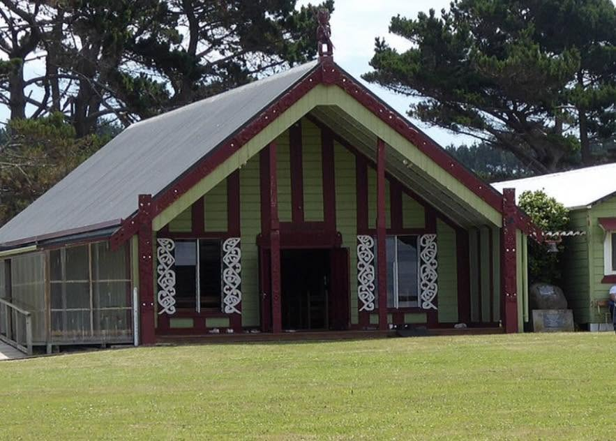
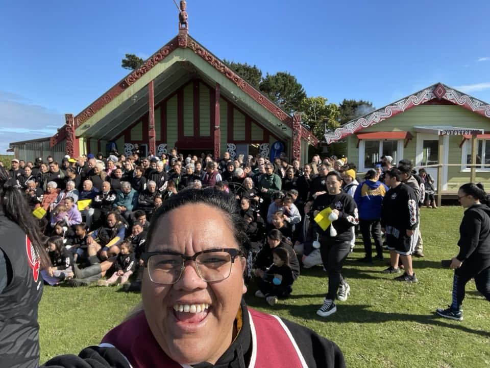
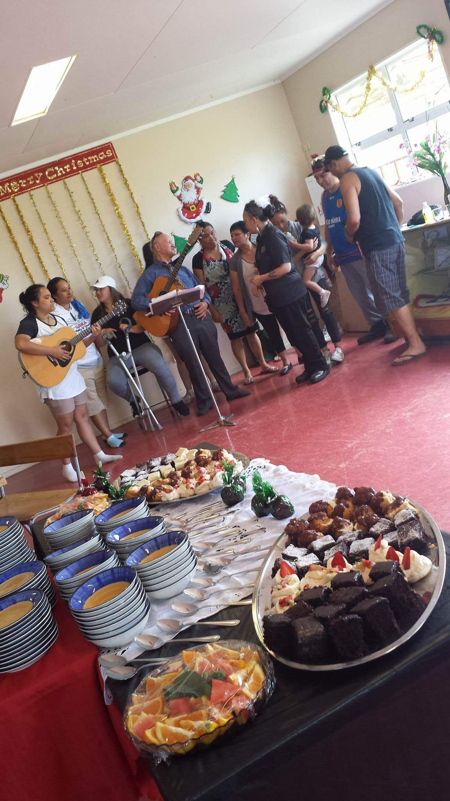
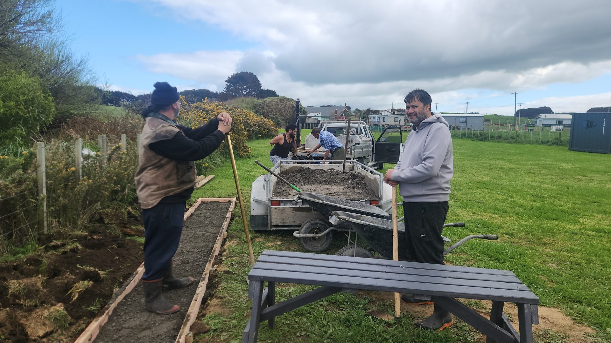
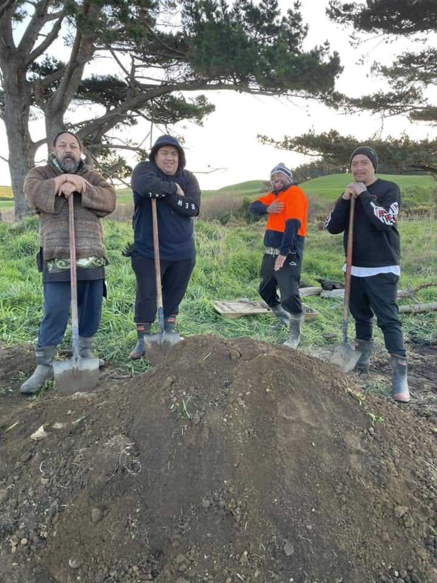
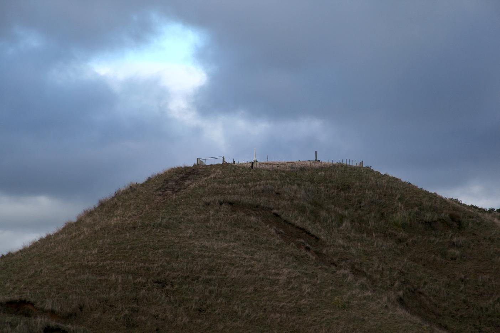
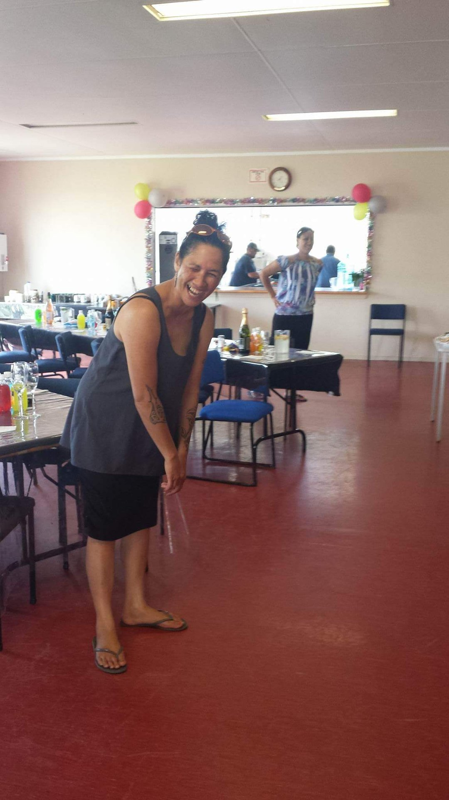
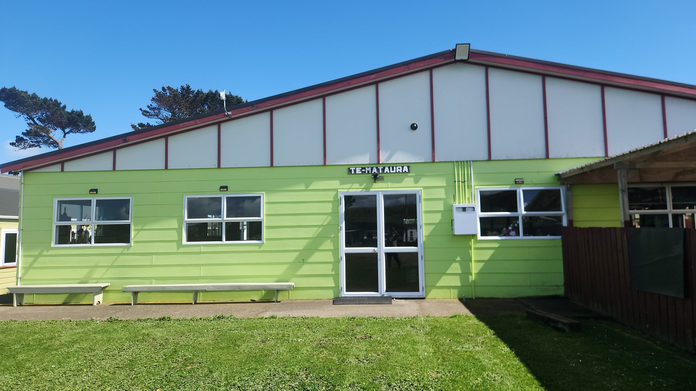

Governance
How the marae is governed
Pariroa Pā is a Māori land trust under Te Ture Whenua Māori Act, with trustees elected by and answerable to the beneficiaries of the whenua.
The trust holds the marae reservation set aside in 1926 — the wharenui, the wharekai, the urupā and the grounds — in trust for the five hapū, forever.
The marae's direction is now set by Pariroa Pā 2050, our intergenerational aspirations plan, adopted in 2026. The Plan is reviewed every five years, carried by five-year action plans, and reported to whānau each year.
Track Record
What the pā has delivered
Roofing & refurbishment
Roofing and refurbishment completed across the wharenui and both wharekai.
Water infrastructure
A modern drinking-water treatment plant for the marae and whānau homes on the pā.
PGF renovation 2020
Provincial Growth Fund renovation across four Ngāti Ruanui marae, including Pariroa.
DIA $80,000 grant
Successful DIA grant delivering the Te Matatini kaupapa.
Some of the mahi and the moments it makes room for:







Te Whenua
Where the support goes
Every dollar into the marae goes to the kaupapa: keeping Taiporohēnui warm and weathertight, the water clean, the grounds safe, and the door open for the next tangihanga, the next hui, the next generation.
Puke Atua — the hill that holds the urupā — is an active kaupapa for the trustees, alongside the wider environment and māra kai projects.
And the support now has a destination in view: solar and batteries, the bore, the māra kai — a self-reliant pā by 2050. Read where it's all heading.
Koha
Supporting the marae
Koha is an expression of aroha and respect — given in person at the pōwhiri, cash on the day, as it has always been. Groups and organisations wanting to support the marae's kaupapa — the buildings, the water, the mokopuna — are warmly invited to talk with us.